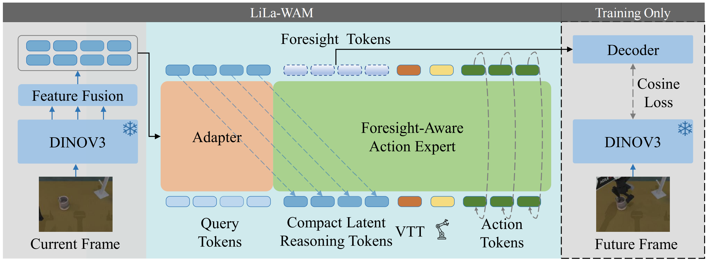
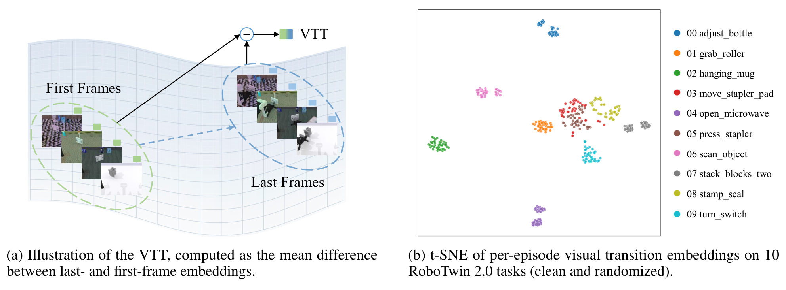
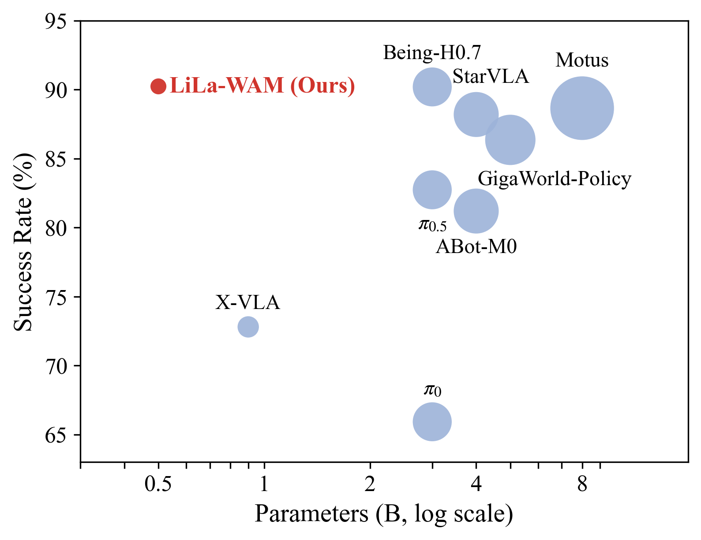
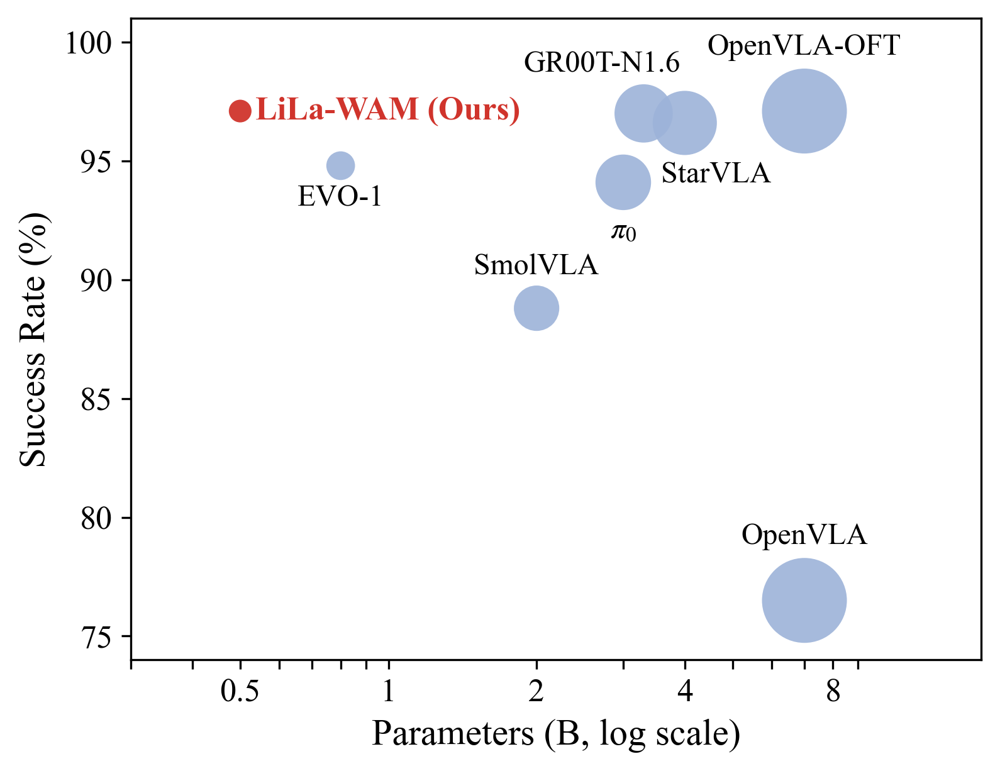
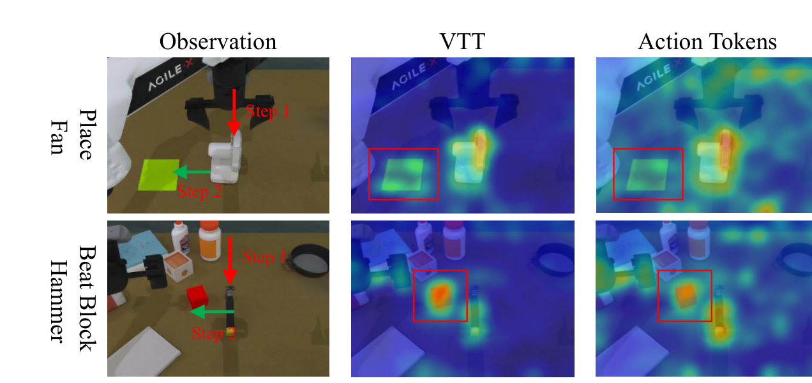
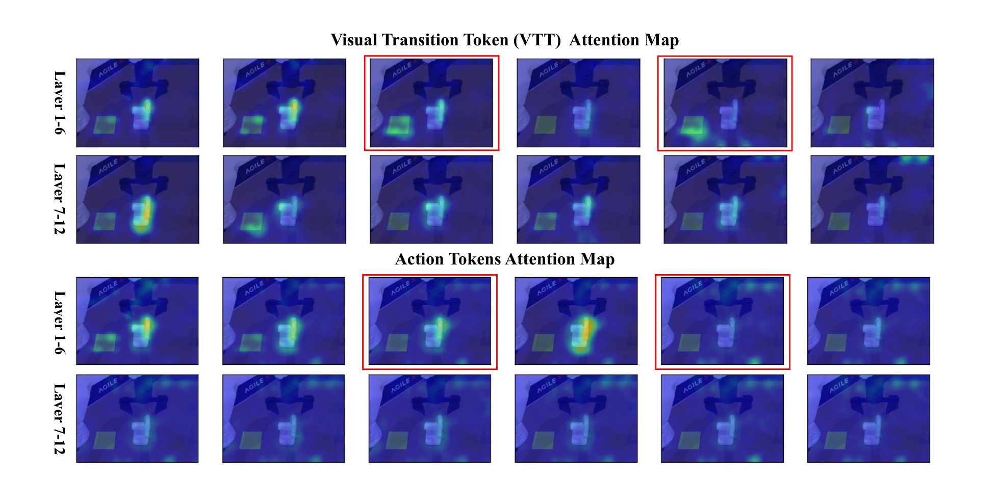
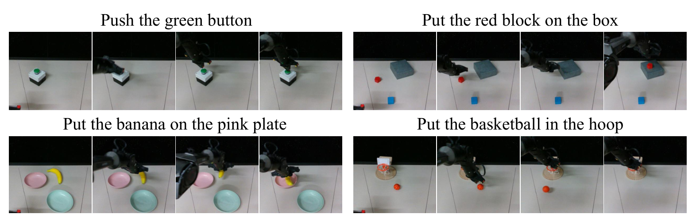

LiLa-WAM: Lightweight Latent Reasoning World-Action Model for Robotic Manipulation
Abstract
World-action modeling has emerged as a promising paradigm for robotic control, as it empowers models to go beyond reacting to observations and anticipate how a scene will evolve. However, existing WAMs often incur substantial computational overhead. Pixel-space methods often allocate substantial capacity to visual details that may not be directly relevant to control, while some latent-space methods require multi-stage training to construct the reasoning space. The resulting training cost can make such methods difficult to train under modest computational budgets. In this work, we propose LiLa-WAM, a lightweight world-action model that reasons about the future in a compact latent space and can be trained end-to-end on a single 24GB GPU. Its core design is a compact latent reasoning space jointly shaped by future-state prediction and action generation, which keeps the model lightweight while remaining well aligned with control. For task specification, we further propose the Visual Transition Token (VTT), a language-free task representation that encodes each task as a direction in visual feature space. Experiments on RoboTwin 2.0, LIBERO, and real-robot tasks demonstrate LiLa-WAM's effectiveness, achieving 90.48% success across 50 RoboTwin tasks with single-GPU training.
Method
LiLa-WAM builds on a frozen DINOv3 encoder and concentrates all trainable capacity in a single lightweight stream. At its core, the Foresight-Aware Action Expert unifies future-state prediction and action generation: reasoning tokens, the VTT task token, proprioceptive tokens, and noisy action tokens are processed in one sequence, jointly producing the action velocity and foresight tokens. Foresight tokens are supervised in the DINOv3 feature space during training and discarded at inference, introducing no extra test-time cost.

Overview of LiLa-WAM. The Foresight-Aware Action Expert unifies reasoning tokens, the VTT, proprioceptive tokens, and noisy action tokens in a single stream, jointly producing the action velocity and foresight tokens, which are supervised in the feature space during training and discarded at inference.
Visual Transition Token
The Visual Transition Token (VTT) is a language-free task representation computed as the mean difference between last- and first-frame visual embeddings over a task's demonstrations. It encodes each task as a transition direction in feature space — what the task changes about the scene — requiring neither text nor a goal image at test time. Per-episode transition embeddings form well-separated, semantically meaningful clusters across tasks.

Left: illustration of the VTT, computed as the mean difference between last- and first-frame embeddings. Right: t-SNE of per-episode visual transition embeddings on 10 RoboTwin 2.0 tasks (clean and randomized).
Results

Comparison on RoboTwin 2.0 (50 tasks).

Comparison on LIBERO.
Average success rate versus model size. LiLa-WAM achieves competitive performance while using substantially fewer parameters than most compared methods.
RoboTwin 2.0 (50 tasks)
| Method | Params | Clean | Random |
|---|---|---|---|
| ABot-M0 | 4B | 81.20 | 80.40 |
| StarVLA | 4B | 88.20 | 88.30 |
| π0 | 3B | 65.92 | 58.40 |
| π0.5 | 3B | 82.74 | 76.76 |
| X-VLA | 0.9B | 72.88 | 72.84 |
| Motus | 8B | 88.66 | 87.02 |
| GigaWorld-Policy | 5B | 86.36 | 85.04 |
| Being-H0.7 | 3B | 90.20 | 89.60 |
| LiLa-WAM (Ours) | 0.5B | 90.48 | 89.04 |
Average success rates (%) over 50 RoboTwin 2.0 tasks.
LIBERO
| Method | Params | Spatial | Object | Goal | Long | AVG |
|---|---|---|---|---|---|---|
| OpenVLA | 7B | 84.7 | 88.4 | 79.2 | 53.7 | 76.5 |
| OpenVLA-OFT | 7B | 97.6 | 98.4 | 97.9 | 94.5 | 97.1 |
| StarVLA | 4B | 97.8 | 98.6 | 96.2 | 93.8 | 96.6 |
| π0 | 3B | 96.8 | 98.8 | 95.8 | 85.2 | 94.1 |
| GR00T-N1.6 | 3.3B | 97.7 | 98.5 | 97.5 | 94.4 | 97.0 |
| JEPA-VLA | -- | 97.2 | 98.0 | 95.6 | 94.8 | 96.4 |
| SmolVLA | 2B | 93.0 | 94.0 | 91.0 | 77.0 | 88.8 |
| EVO-1 | 0.8B | 92.7 | 97.7 | 96.3 | 92.3 | 94.8 |
| LiLa-WAM (Ours) | 0.5B | 98.0 | 98.8 | 97.2 | 94.2 | 97.1 |
Success rates (%) on the four LIBERO suites (Spatial, Object, Goal, and Long).
What Do the VTT and Action Tokens Attend To?
The VTT and the action tokens exhibit a clear division of labor: the VTT focuses on the objects that the task acts upon (e.g., the fan and its target pad, the block and the hammer), while the action tokens attend more to the arm and gripper, with responses spreading over the manipulation region — matching the intuition that task specification captures what to manipulate, whereas action generation tracks how the manipulator moves.

Attention maps of the VTT and action tokens.

Per-layer attention maps of the VTT and action tokens across the 12 DiT blocks. The VTT attends more to the placement area, whereas the action tokens attend more to the object being manipulated (red boxes).
Real-Robot Experiments
We evaluate LiLa-WAM on an AgileX PiPer 6-DoF robotic arm with a RealSense D435 third-person camera on four real-world tasks with randomized object placements. Foresight supervision improves the average success rate from 74.0% to 82.0% over the ablated variant without the foresight loss.

Execution process of the four real-robot tasks.
| Method | Button | Block | Banana | Basketball | Avg |
|---|---|---|---|---|---|
| w/o foresight loss | 72 | 84 | 92 | 48 | 74.0 |
| LiLa-WAM | 86 | 90 | 96 | 56 | 82.0 |
Real-robot success rates (%). The four tasks are push the green button (Button), put the red block on the box (Block), put the banana on the pink plate (Banana), and put the basketball in the hoop (Basketball).
BibTeX
@article{yang2026lilawam,
title={LiLa-WAM: Lightweight Latent Reasoning World-Action Model for Robotic Manipulation},
author={Yang, Fan and Su, Yuting and Wang, Xiaobo and You, Yuncheng and Fan, Fugui and Wu, Yuting and Wu, Minghui and Zhao, Chenxu and Ning, Jiahong and Jing, Peiguang},
journal={arXiv preprint},
year={2026},
url={https://github.com/teee000/LiLa-WAM}
}